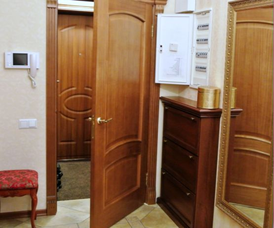

Качественный электромонтаж, Стаж 12 лет. Частный электрик, недорого.
Тел. 8 904 642 08 57. Николай.

Разводка электропроводки в доме.
Электропроводка в доме – как ее создать.
Счетчик, приборная панель – как провести электричество.
Проще конструировать установку, в том порядке, в котором вводим электричество в доме. Вначале мы должны предусмотреть место для счетчика электроэнергии. Стоит установить его таким образом, чтобы в процессе эксплуатации мы имели легкий доступ для чтения значений, указанных в нем.
Необходима приборная панель, которая выделяет электричество на все здание, и одновременно будет местом для установки предохранителей. Она должна быть установлена на такой высоте, чтобы люди, живущие в дом могли к ней без особых трудностей получить доступ в случае аварии. Если в доме проживает инвалид в инвалидной коляске, то приборная панель должен быть в пределах его досягаемости.
Сколько стоит сделать электропроводку в доме.
Площадь дома. |
Цена электропроводку под ключ. |
40 кв. м. |
От 28000 руб. |
50 |
36000 |
60 |
43000 |
70 |
50000 |
80 |
57000 |
90 |
64000 |
100 кв. м. |
От 70000 руб. |
План разводки электропроводов.
Планируя размер приборной панели надо предусмотреть независимые контуры на свет и розетки в каждом помещении. В больших помещениях стоит планировать по два контура, и, соответственно, больше, если потребление тока в данном помещении должен быть высоким
Важным шагом в процессе проектирования электрической сети является планирование выключателей, расположение источников света и розеток в каждом помещении. Этот шаг предшествует предварительное расположение мебели в доме. Это имеет решающее значение, чтобы мы не закрыли выключателя света, или не закрыли шкафом.
Прихожая.

В прихожей, как правило, не нужно слишком много электрических розеток, однако, построив дом, стоит установить хотя бы одну. Если наша прихожая большая, стоит запланировать два выключателя света в начале и в конце помещения. Это необходимо, чтобы мы, входя в дом, могли включать свет и пройти через помещение выключить свет.
Кухня.
Если используем электрические печи нужно учитывать потребление тока всех устройств, кухонных, если бы они работали все разом. Не всегда мы используем именно этот способ, готовя ужин, мы можем включить индукционную плиту, духовку и электрический чайник. Если не обдумаем нашу установку в правильном направлении, может привести к ее перегрузке.
Проектируя установку в гостиной нужно предусмотреть место установки мультимедийных устройств, таких как домашний кинотеатр. В этом помещении должно быть гораздо большее количество розеток, чем в любом другом месте в доме. Если вы планируете установить телевизор на стене, мы должны помнить об установке специального туннеля так, чтобы не было видно проводов, выходящих с устройства. Одновременно принимая такое решение, мы должны на противоположной стороне комнаты предусмотреть источник питания для проектора.
Разводка проводки в спальне.
Спальня является местом, в котором не понадобится большого количества розеток как в кухне, или в гостиной. Здесь мы можем запланировать большее количество выключателей, так чтобы свет можно было выключить в дверях дополнительным выключателем без необходимости вставать с кровати.
Лестница.
Освещение лестницы является важным элементом электрической сети.
Должно быть разработано так, чтобы мы смогли включить их как в начале, так и в конце лестницы. Практичным решением может быть установка фотоэлемента, который реагирует при обнаружении движения в соответствующем расстоянии от них.
Какие источники света выбрать?
Производители освещения, основанного на разного рода светодиодов разрабатывают, для нас все новые и новые заменители известных нам до сих пор источников света. Лампы светодиодные светильники доступны практически на любую резьбу, или тип разъема. Кроме того, мы можем выбрать цветовую температуру лампы накаливания, ее мощность и даже цвет освещения. Разнообразие продуктов, что дает возможность выбрать подходящую модель для себя. Стоимость такой лампы выше, чем других источников света, доступных на рынке, но его свойства делают его более выгодным.

В современном мире мобильных устройств часто нужен доступ к электроэнергии, поэтому стоит рядом с диваном смонтировать электрические розетки. Это будет гораздо более эстетичным и практичным, чем удлинитель через всю комнату
Выключатели света должны быть установлены так, чтобы мы смогли использовать часть освещения. Это имеет большое значение, потому что, сидя за столом, мы не должны освещать весь салон, что значительно повлияет на расход электроэнергии

Сделать электрику в квартире.
Расценки на электропроводку квартир.
Провести электропроводку в новостройке.
Электромонтаж в частном доме.
Электрика в загородном доме.
Сколько стоит замена электропроводки в двухкомнатной квартире?.
Сколько стоит проводка в 3 ком квартире?
Сколько стоит проложить проводку в четырех комнатной квартире?
Сколько стоит сделать внутреннюю проводку?
Стоимость штробление стен.
Электромонтаж двухкомнатной квартиры.
Замена электропроводки в панельном доме.
Электромонтаж проводов в бане.